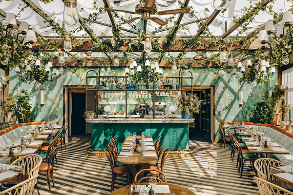
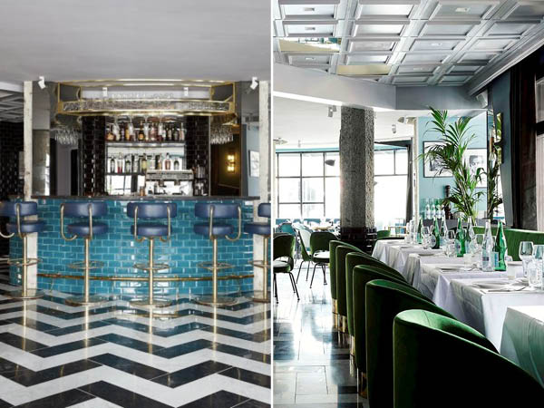
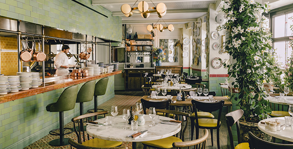

Our Locations
We have three location in the netherlands, these can be found in Amsterdam, Rotterdam and Utrecht. there are new restaurants in the making in other big cities in the netherlands. All three locations are quite stylish so you really get the Italian vibe when you are dining in our restaurant. We hope to see you soon in one of our restaurants.
Amsterdam
This is our first location and was build in 1964. We are very proud on this restaurant. The restaurant has alot of plants which create a very cheerfull esthetic. We also grow grapes here along the roof which are used to make home made wine.
The restaurant can be found at Italianenstraat 523
Rotterdam
This restaurant is alot more stylish and posh/chic. Interiors like this can be found in classy restaurants in Italy. We however encourage everyone to come even if you are not so classy yourself. We want everyone to be able to experience a restaurant like this. So feel free to come eat here with your kids.
The restaurant can be found at Pizzastreek 302
Utrecht
This is our newest restaurant. The interior is somewhat a mix between the other two restaurants. In this restaurant you can watch how your food is being made and learn our recipes that way.
The restaurant can be found at Pastalaan 12
